Chapter 9 Dimensionality reduction for visualisation
In part 1 we gathered the data, aligned reads, checked quality, and normalised read counts. We will now identify genes to focus on, use visualisation to explore the data, collapse the data set, cluster cells by their expression profile and identify genes that best characterise these cell populations. These main steps are shown below (???).

We’ll first explain dimensionality reduction for visualisation, using Principal Component Analysis, t-SNE and UMAP.
9.1 Principal Component Analysis
In a single cell RNA-seq (scRNASeq) data set, each cell is described by the expression level of thoushands of genes.
The total number of genes measured is referred to as dimensionality. Each gene measured is one dimension in the space characterising the data set. Many genes will little vary across cells and thus be uninformative when comparing cells. Also, because some genes will have correlated expression patterns, some information is redundant. Moreover, we can represent data in three dimensions, not more. So reducing the number of useful dimensions is necessary.
9.1.1 Description
The data set: a matrix with one row per sample and one variable per column. Here samples are cells and each variable is the normalised read count for a given gene.
The space: each cell is associated to a point in a multi-dimensional space where each gene is a dimension.
The aim: to find a new set of variables defining a space with fewer dimensions while losing as little information as possible.
Out of a set of variables (read counts), PCA defines new variables called Principal Components (PCs) that best capture the variability observed amongst samples (cells), see (???) for example.
The number of variables does not change. Only the fraction of variance captured by each variable differs. The first PC explains the highest proportion of variance possible (bound by prperties of PCA). The second PC explains the highest proportion of variance not explained by the first PC. PCs each explain a decreasing amount of variance not explained by the previous ones. Each PC is a dimension in the new space.
The total amount of variance explained by the first few PCs is usually such that excluding remaining PCs, ie dimensions, loses little information. The stronger the correlation between the initial variables, the stronger the reduction in dimensionality. PCs to keep can be chosen as those capturing at least as much as the average variance per initial variable or using a scree plot, see below.
PCs are linear combinations of the initial variables. PCs represent the same amount of information as the initial set and enable its restoration. The data is not altered. We only look at it in a different way.
About the mapping function from the old to the new space:
- it is linear
- it is inverse, to restore the original space
- it relies on orthogonal PCs so that the total variance remains the same.
Two transformations of the data are necessary:
- center the data so that the sample mean for each column is 0 so the covariance matrix of the intial matrix takes a simple form
- scale variance to 1, ie standardize, to avoid PCA loading on variables with large variance.
9.1.2 Example
Here we will make a simple data set of 100 samples and 2 variables, perform PCA and visualise on the initial plane the data set and PCs (???).
library(ggplot2)
fontsize <- theme(axis.text=element_text(size=12),
axis.title=element_text(size=16))Let’s make and plot a data set.
set.seed(123) #sets the seed for random number generation.
x <- 1:100 #creates a vector x with numbers from 1 to 100
ex <- rnorm(100, 0, 30) #100 normally distributed rand. nos. w/ mean=0, s.d.=30
ey <- rnorm(100, 0, 30) # " "
y <- 30 + 2 * x #sets y to be a vector that is a linear function of x
x_obs <- x + ex #adds "noise" to x
y_obs <- y + ey #adds "noise" to y
P <- cbind(x_obs,y_obs) #places points in matrix
plot(P,asp=1,col=1) #plot points
points(mean(x_obs),mean(y_obs),col=3, pch=19) #show center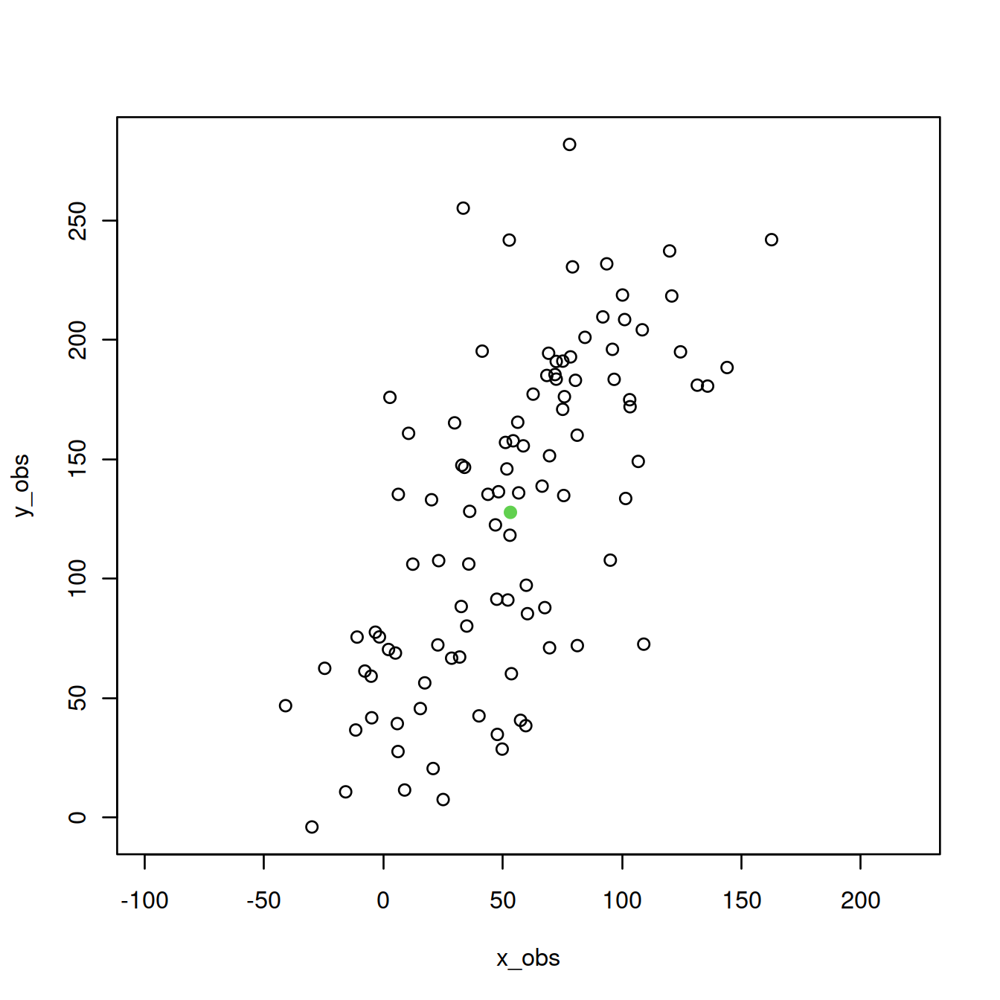
Center the data and compute covariance matrix.
M <- cbind(x_obs - mean(x_obs), y_obs - mean(y_obs)) #centered matrix
MCov <- cov(M) #creates covariance matrixCompute the principal axes, ie eigenvectors and corresponding eigenvalues.
An eigenvector is a direction and an eigenvalue is a number measuring the spread of the data in that direction. The eigenvector with the highest eigenvalue is the first principal component.
The eigenvectors of the covariance matrix provide the principal axes, and the eigenvalues quantify the fraction of variance explained in each component.
eigenValues <- eigen(MCov)$values #compute eigenvalues
eigenVectors <- eigen(MCov)$vectors #compute eigenvectors
# or use 'singular value decomposition' of the matrix
d <- svd(M)$d #the singular values
v <- svd(M)$v #the right singular vectorsLet’s plot the principal axes.
First PC:
# PC 1:
plot(P,asp=1,col=1) #plot points
points(mean(x_obs),mean(y_obs),col=3, pch=19) #show center
lines(x_obs,eigenVectors[2,1]/eigenVectors[1,1]*M[x]+mean(y_obs),col=8)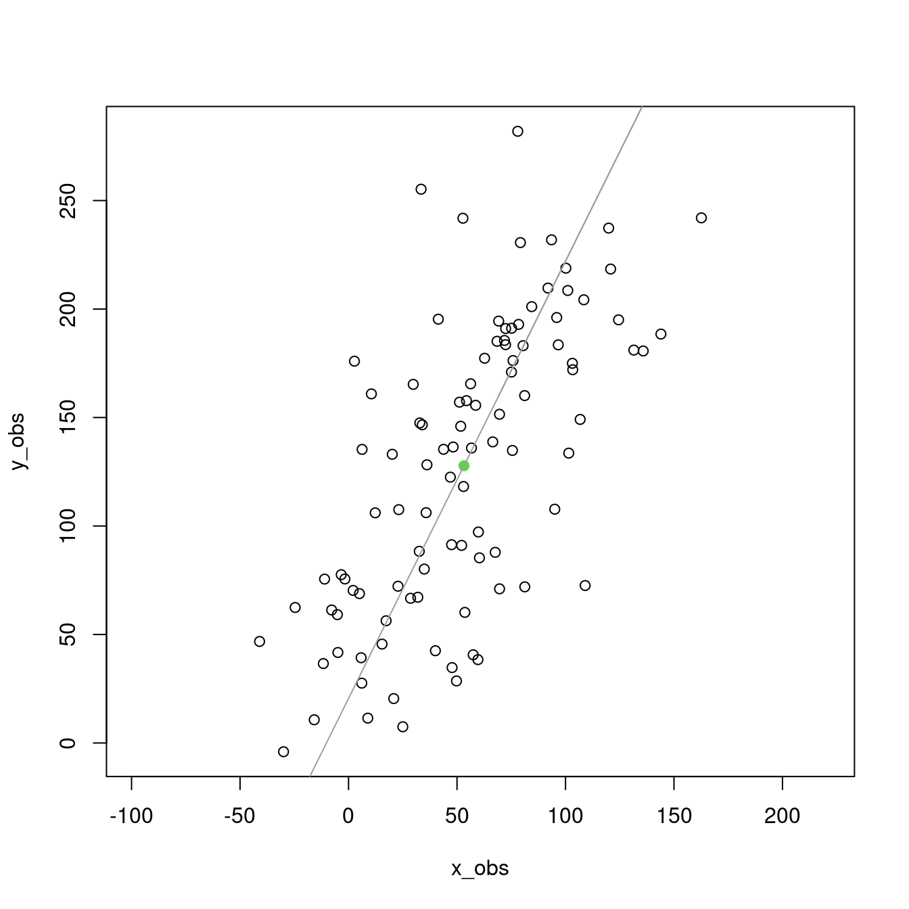
Second PC:
plot(P,asp=1,col=1) #plot points
points(mean(x_obs),mean(y_obs),col=3, pch=19) #show center
# PC 1:
lines(x_obs,eigenVectors[2,1]/eigenVectors[1,1]*M[x]+mean(y_obs),col=8)
# PC 2:
lines(x_obs,eigenVectors[2,2]/eigenVectors[1,2]*M[x]+mean(y_obs),col=8)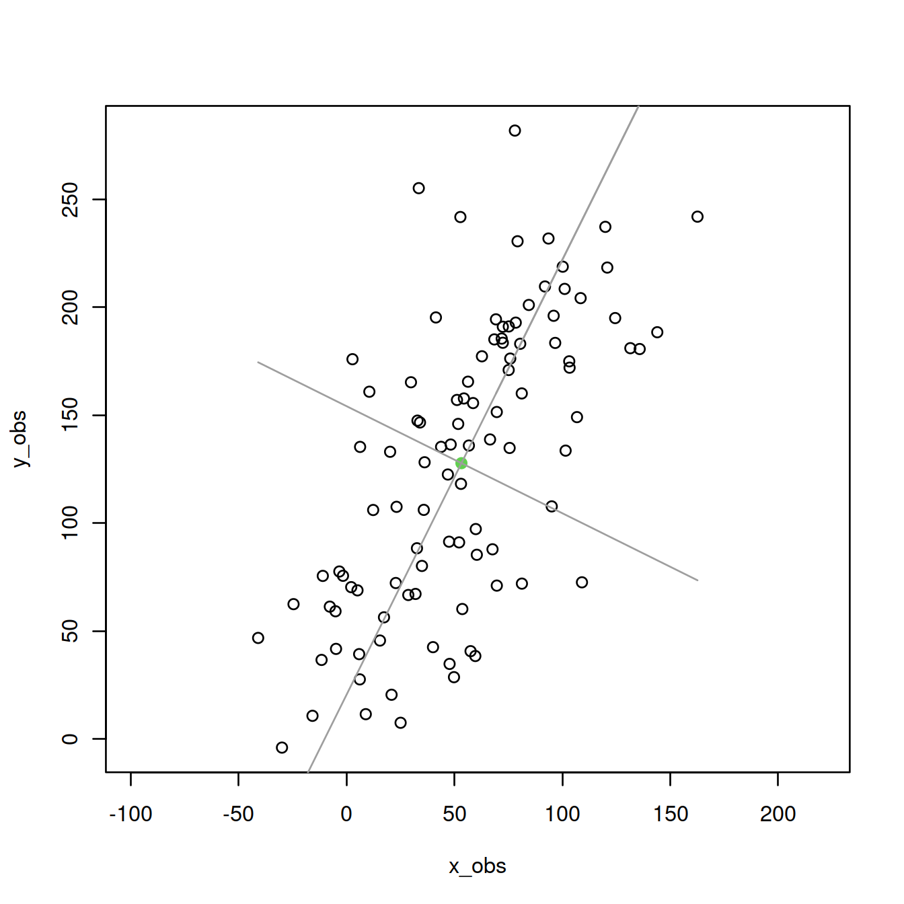
Add the projections of the points onto the first PC:
plot(P,asp=1,col=1) #plot points
points(mean(x_obs),mean(y_obs),col=3, pch=19) #show center
# PC 1:
lines(x_obs,eigenVectors[2,1]/eigenVectors[1,1]*M[x]+mean(y_obs),col=8)
# PC 2:
lines(x_obs,eigenVectors[2,2]/eigenVectors[1,2]*M[x]+mean(y_obs),col=8)
# add projecions:
trans <- (M%*%v[,1])%*%v[,1] #compute projections of points
P_proj <- scale(trans, center=-cbind(mean(x_obs),mean(y_obs)), scale=FALSE)
points(P_proj, col=4,pch=19,cex=0.5) #plot projections
segments(x_obs,y_obs,P_proj[,1],P_proj[,2],col=4,lty=2) #connect to points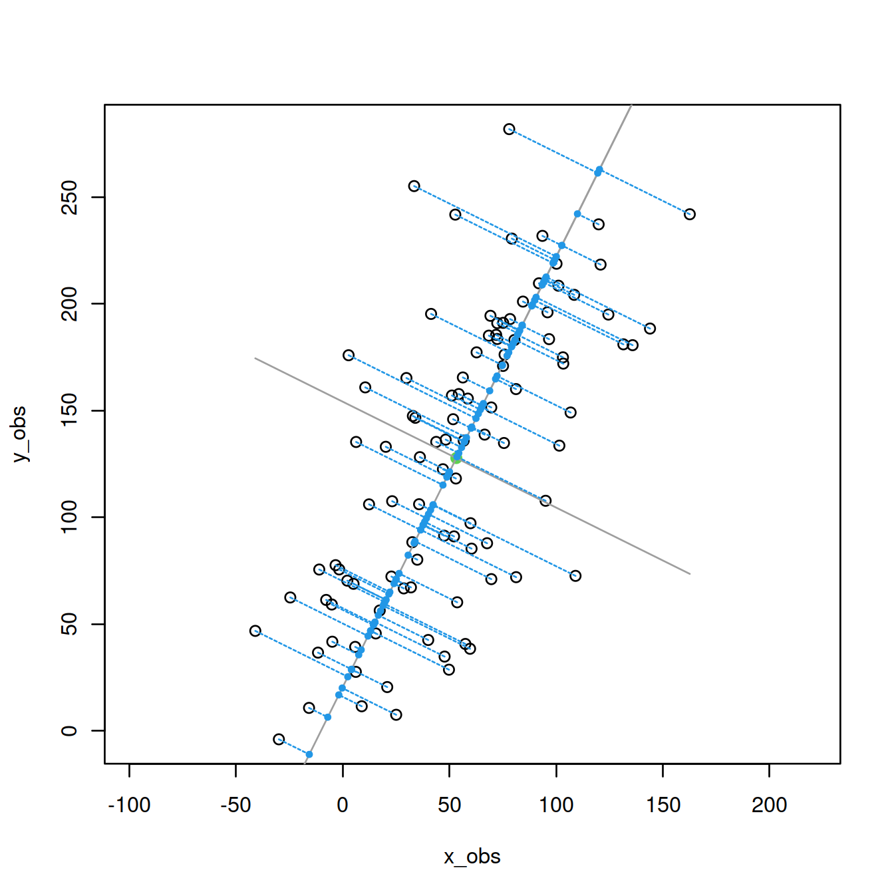
Compute PCs with prcomp().
## Importance of components:
## PC1 PC2
## Standard deviation 73.827 28.279
## Proportion of Variance 0.872 0.128
## Cumulative Proportion 0.872 1.000## [1] 0.8720537 0.1279463Check amount of variance captured by PCs on a scree plot.
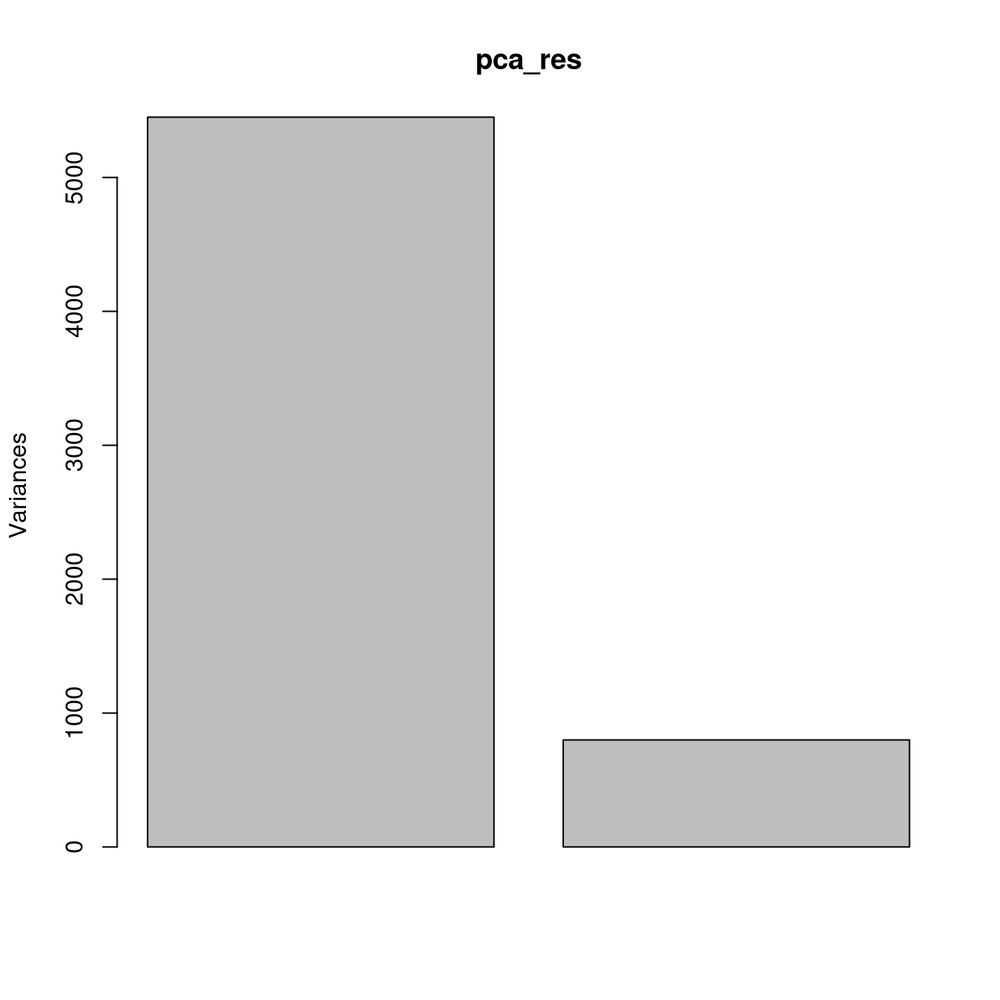
Plot with ggplot.
df_pc <- data.frame(pca_res$x)
g <- ggplot(df_pc, aes(PC1, PC2)) +
geom_point(size=2) + # draw points
labs(title="PCA",
subtitle="With principal components PC1 and PC2 as X and Y axis") +
coord_cartesian(xlim = 1.2 * c(min(df_pc$PC1), max(df_pc$PC1)),
ylim = 1.2 * c(min(df_pc$PC2), max(df_pc$PC2)))
g <- g + geom_hline(yintercept=0)
g <- g + geom_vline(xintercept=0)
g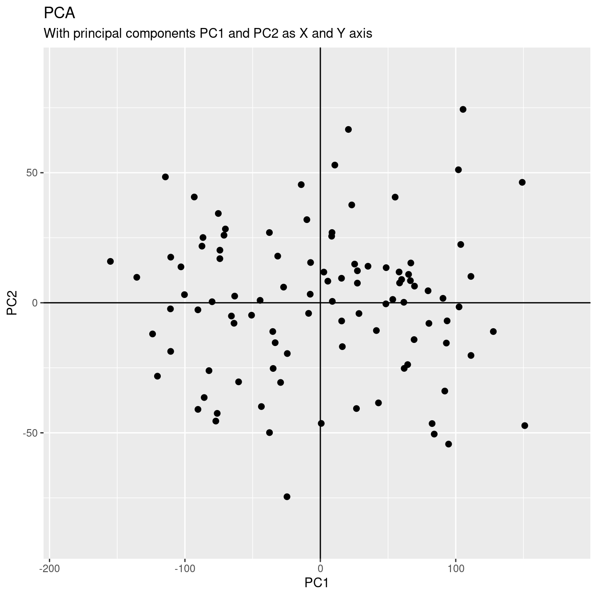
Or use ggfortify autoplot().
# ggfortify
library(ggfortify)
g <- autoplot(pca_res)
g <- g + geom_hline(yintercept=0)
g <- g + geom_vline(xintercept=0)
g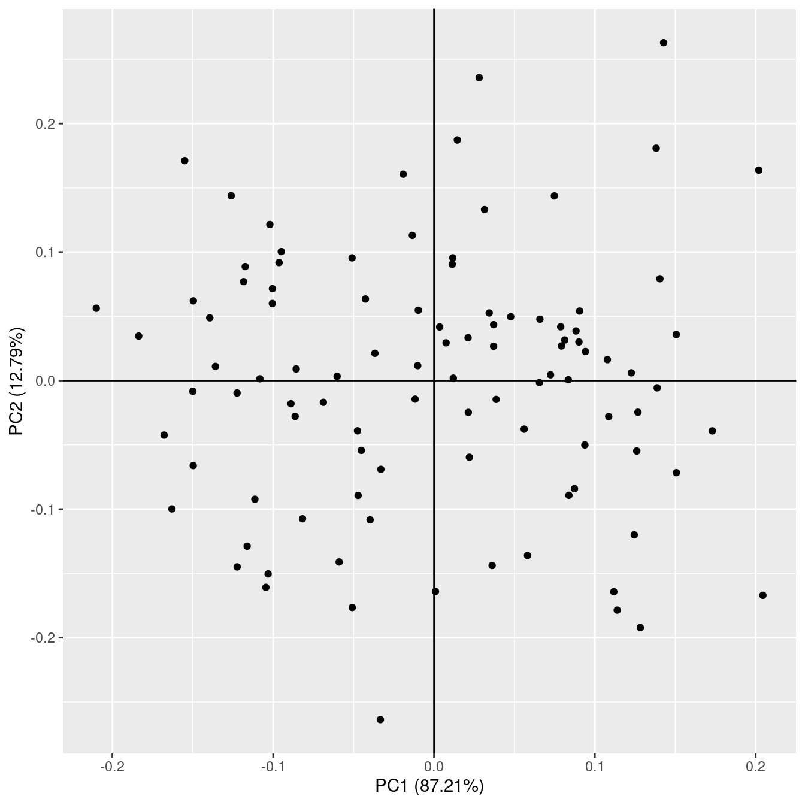
Going from 2D to 3D (figure from (???)):

9.3 Load data
We will load the R file keeping the SCE object with the normalised counts for 500 cells per sample.
setName <- "caron"
setSuf <- "_5hCellPerSpl"
# Read object in:
tmpFn <- sprintf("%s/%s/Robjects/%s_sce_nz_postDeconv%s.Rds", projDir, outDirBit, setName, setSuf)
print(tmpFn)## [1] "/ssd/personal/baller01/20200511_FernandesM_ME_crukBiSs2020/AnaWiSce/Ana1/Robjects/caron_sce_nz_postDeconv_5hCellPerSpl.Rds"## class: SingleCellExperiment
## dim: 16629 5500
## metadata(0):
## assays(2): counts logcounts
## rownames(16629): ENSG00000237491 ENSG00000225880 ... ENSG00000275063
## ENSG00000271254
## rowData names(11): ensembl_gene_id external_gene_name ... detected
## gene_sparsity
## colnames: NULL
## colData names(16): Barcode Run ... cell_sparsity sizeFactor
## reducedDimNames(0):
## altExpNames(0):## DataFrame with 6 rows and 11 columns
## ensembl_gene_id external_gene_name chromosome_name
## <character> <character> <character>
## ENSG00000237491 ENSG00000237491 LINC01409 1
## ENSG00000225880 ENSG00000225880 LINC00115 1
## ENSG00000230368 ENSG00000230368 FAM41C 1
## ENSG00000230699 ENSG00000230699 AL645608.2 1
## ENSG00000188976 ENSG00000188976 NOC2L 1
## ENSG00000187961 ENSG00000187961 KLHL17 1
## start_position end_position strand Symbol
## <integer> <integer> <integer> <character>
## ENSG00000237491 778747 810065 1 AL669831.5
## ENSG00000225880 826206 827522 -1 LINC00115
## ENSG00000230368 868071 876903 -1 FAM41C
## ENSG00000230699 911435 914948 1 AL645608.3
## ENSG00000188976 944203 959309 -1 NOC2L
## ENSG00000187961 960584 965719 1 KLHL17
## Type mean detected gene_sparsity
## <character> <numeric> <numeric> <numeric>
## ENSG00000237491 Gene Expression 0.02785355 2.706672 0.977951
## ENSG00000225880 Gene Expression 0.01376941 1.340222 0.985699
## ENSG00000230368 Gene Expression 0.02027381 1.946076 0.980821
## ENSG00000230699 Gene Expression 0.00144251 0.144251 0.997704
## ENSG00000188976 Gene Expression 0.17711393 14.511645 0.835565
## ENSG00000187961 Gene Expression 0.00354070 0.348825 0.9959359.4 PCA
Perform PCA, keep outcome in same object.
nbPcToComp <- 50
# compute PCA:
#sce <- runPCA(sce, ncomponents = nbPcToComp, method = "irlba")
sce <- runPCA(sce, ncomponents = nbPcToComp)Display scree plot.
## [1] 16.1072558 9.6482486 4.4673293 3.7808853 1.9639696 1.8008626
## [7] 1.6739293 1.2887282 1.0690783 0.8596321 0.8018422 0.6846937
## [13] 0.6139309 0.5946088 0.5411263 0.4377304 0.3900507 0.3815624
## [19] 0.3636303 0.3514861 0.3408887 0.2973306 0.2843550 0.2754252
## [25] 0.2666001 0.2609457 0.2555751 0.2496498 0.2481626 0.2371280
## [31] 0.2320116 0.2304992 0.2270922 0.2257485 0.2242832 0.2198916
## [37] 0.2189744 0.2173953 0.2151230 0.2140901 0.2129180 0.2120306
## [43] 0.2094498 0.2083422 0.2063008 0.2059701 0.2047050 0.2033185
## [49] 0.2025080 0.2017399barplot(attributes(sce.pca)$percentVar,
main=sprintf("Scree plot for the %s first PCs", nbPcToComp),
names.arg=1:nbPcToComp,
cex.names = 0.8)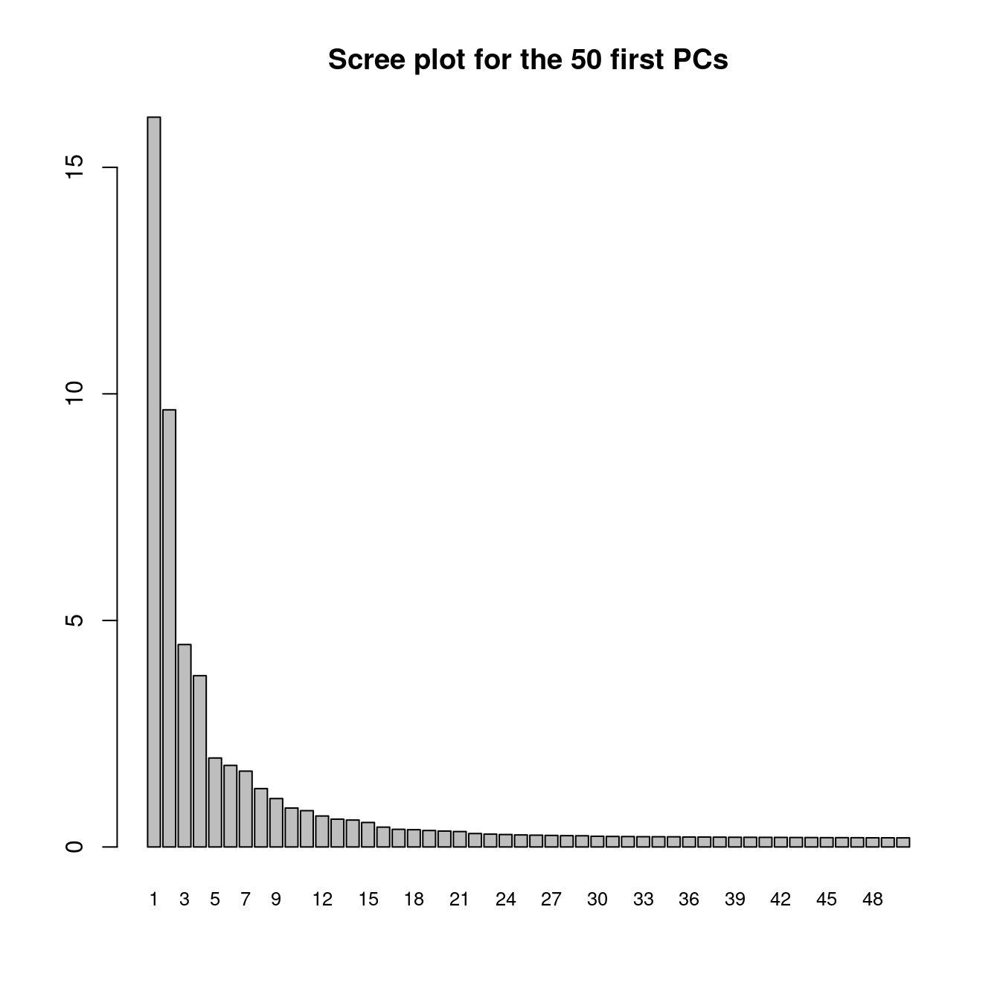
Display cells on a plot for the first 2 PCs, colouring by ‘Sample’ and setting size to match ‘total_features’.
The proximity of cells reflects the similarity of their expression profiles.
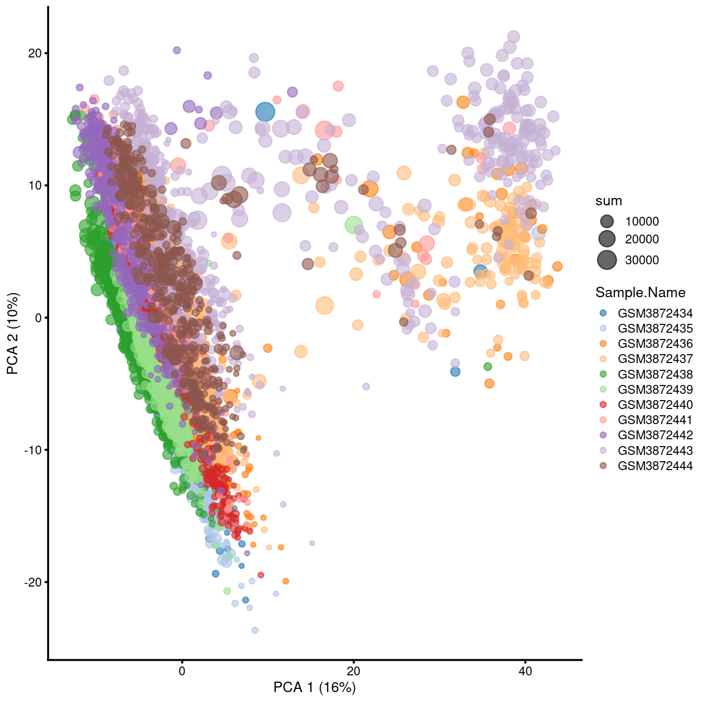
One can also split the plot by sample.
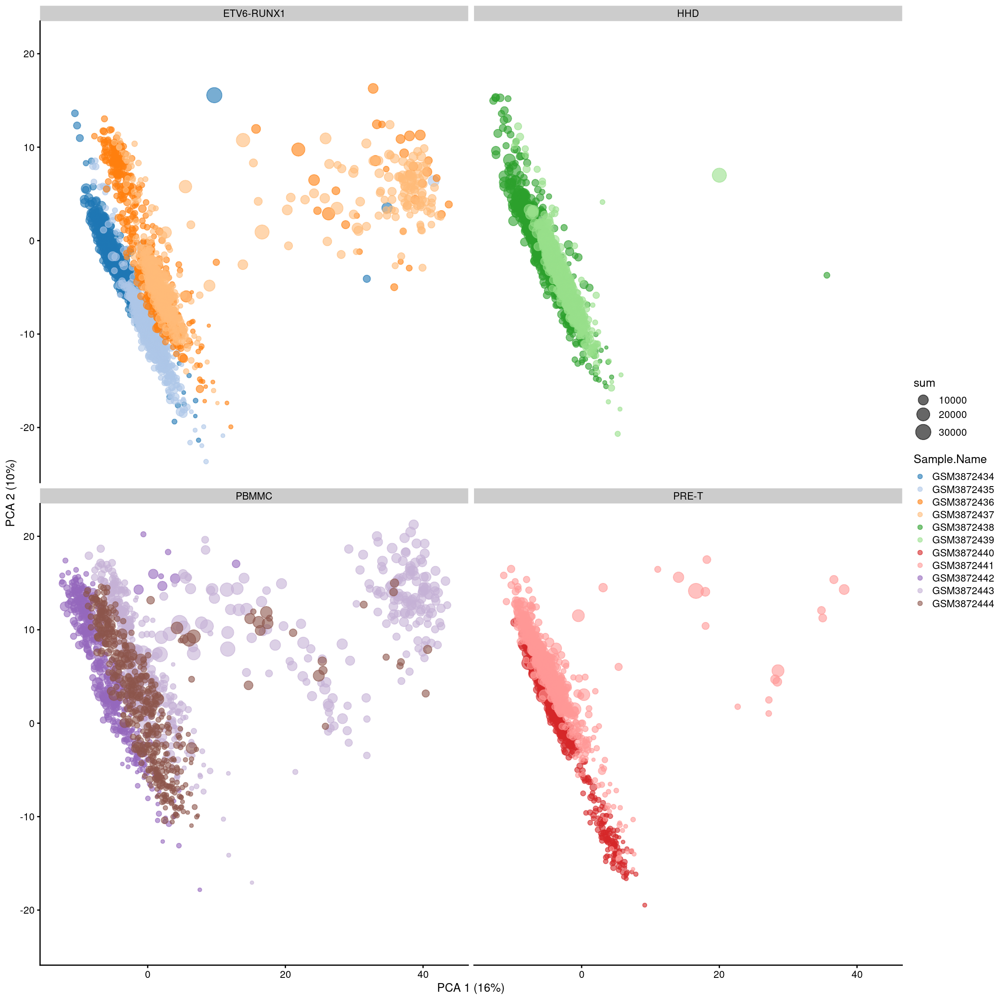
Or plot several PCs at once, using plotReducedDim():
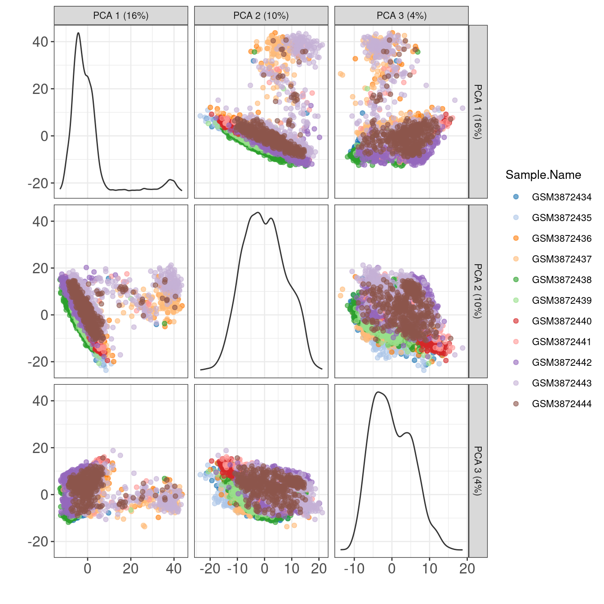
9.4.1 Correlation between PCs and the total number of features detected
The PCA plot above shows cells as symbols whose size depends on the total number of features or library size. It suggests there may be a correlation between PCs and these variables. Let’s check:
colData(sce)$source_name <- factor(colData(sce)$source_name)
colData(sce)$block <- factor(colData(sce)$block)
r2mat <- getExplanatoryPCs(sce)
#r2mat <- getExplanatoryPCs(sce,
# variables = c("Run", "source_name"))
# #variables = c("Run", "Sample.Name"))
# #variables = c("Run", "Sample.Name", "source_name"))
r2mat## Barcode Run Sample.Name source_name sum detected
## PC1 NaN 30.85659 30.85659 6.487377 0.43493165 7.08894442
## PC2 NaN 39.71165 39.71165 25.878094 4.25167387 0.58954116
## PC3 NaN 30.70223 30.70223 18.018721 38.24631708 43.80921901
## PC4 NaN 59.99750 59.99750 46.026981 6.29085450 7.52064941
## PC5 NaN 28.72873 28.72873 11.700557 4.57160974 6.47357417
## PC6 NaN 43.68081 43.68081 15.832822 0.39643282 0.04005349
## PC7 NaN 39.80806 39.80806 25.736034 0.34776526 1.87429989
## PC8 NaN 61.48502 61.48502 53.382059 1.26696650 0.69851353
## PC9 NaN 20.48116 20.48116 7.806216 2.68842935 2.55756540
## PC10 NaN 41.24854 41.24854 5.412729 0.01273348 0.43130416
## subsets_Mito_sum subsets_Mito_detected subsets_Mito_percent total
## PC1 6.51661947 18.1351642 4.1926231 0.43493165
## PC2 0.10383151 1.9809524 15.5359489 4.25167387
## PC3 25.12527402 10.3594392 2.3470910 38.24631708
## PC4 1.55024880 1.7264436 0.2189570 6.29085450
## PC5 8.47830110 15.8647633 7.0504884 4.57160974
## PC6 11.71821736 14.7324487 40.4069838 0.39643282
## PC7 0.05713278 2.0491925 0.8726234 0.34776526
## PC8 0.05725464 1.8114625 5.5016017 1.26696650
## PC9 4.79687302 4.6900075 3.4547445 2.68842935
## PC10 0.06794968 0.2728095 1.0255645 0.01273348
## block setName discard outlier cell_sparsity sizeFactor
## PC1 6.487377 NA 0.1175128 0.34195161 7.08948526 6.03083849
## PC2 25.878094 NA 7.2209671 7.03388703 0.59077199 0.21122381
## PC3 18.018721 NA 6.4199167 9.61961429 43.83600840 35.30043641
## PC4 46.026981 NA 2.7802380 4.06365034 7.50975544 8.72178733
## PC5 11.700557 NA 0.6676141 0.25601414 6.47138586 4.57011170
## PC6 15.832822 NA 18.9268506 15.79017131 0.03990797 0.02550611
## PC7 25.736034 NA 1.2853430 1.97448881 1.87469906 0.71227698
## PC8 53.382059 NA 0.8302930 0.69206768 0.69721085 0.76186993
## PC9 7.806216 NA 0.9206323 0.70318630 2.55906696 3.06770581
## PC10 5.412729 NA 0.2997168 0.08553385 0.43088612 0.30545007dat <- cbind(colData(sce)[,c("Sample.Name",
"source_name",
"sum",
"detected",
#"percent_top_200",
"subsets_Mito_percent")],
reducedDim(sce,"PCA"))
dat <- data.frame(dat)
dat$sum <- log2(dat$sum)
ggplot(dat, aes(x=sum, y=PC1, shape=source_name, col=Sample.Name)) +
geom_point() +
geom_smooth(method=lm, inherit.aes = FALSE, aes(x=sum, y=PC1)) 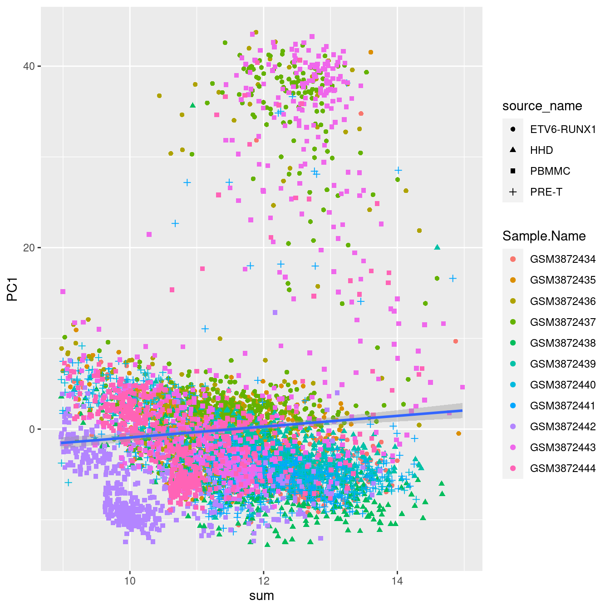
#ggplot(dat, aes(x=percent_top_200, y=PC2, shape=source_name, col=Sample.Name)) +
# geom_point() +
# geom_smooth(method=lm, inherit.aes = FALSE, aes(x=percent_top_200, y=PC2))
ggplot(dat, aes(x=detected, y=PC3, shape=source_name, col=Sample.Name)) +
geom_point() +
geom_smooth(method=lm, inherit.aes = FALSE, aes(x=detected, y=PC3)) 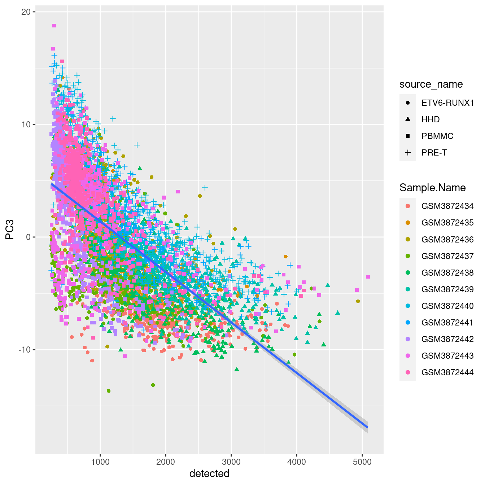
ggplot(dat, aes(x=subsets_Mito_percent, y=PC2, shape=source_name, col=Sample.Name)) +
geom_point() +
geom_smooth(method=lm, inherit.aes = FALSE, aes(x=subsets_Mito_percent, y=PC2)) 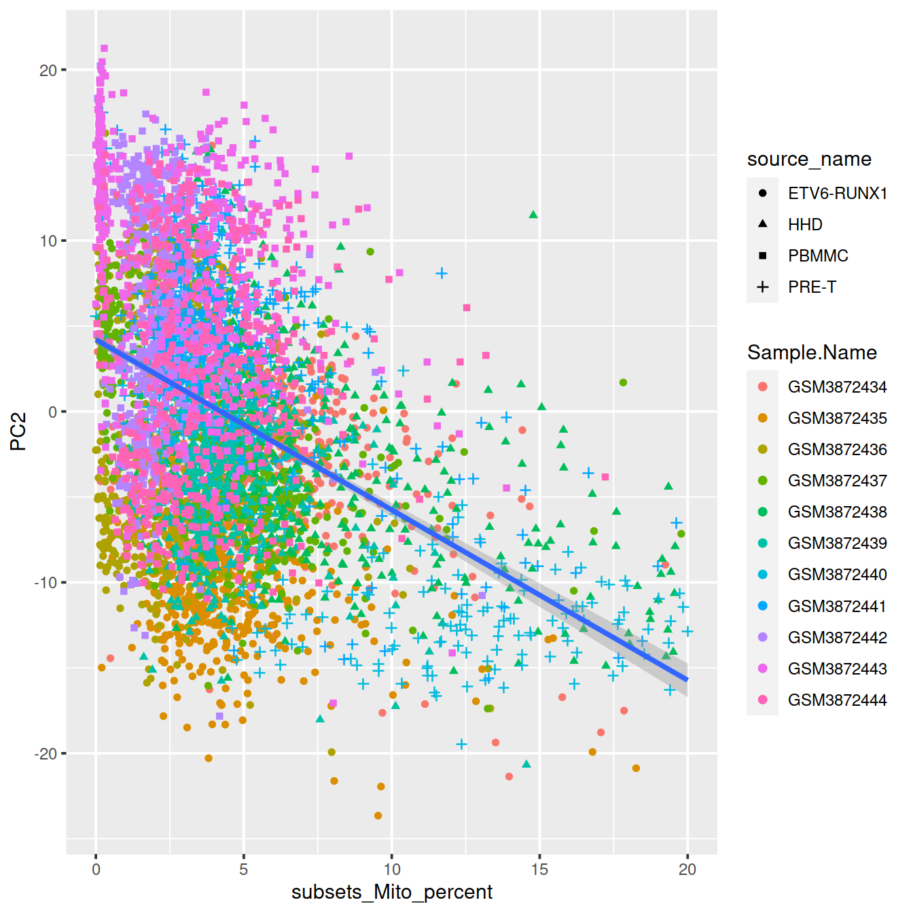
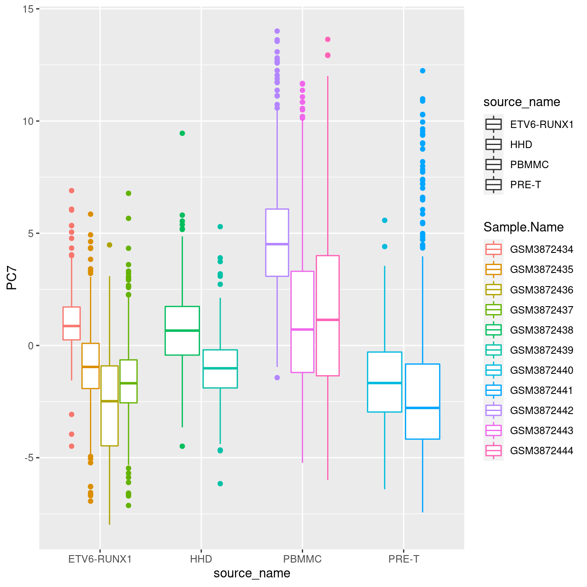
9.5 t-SNE: t-Distributed Stochastic Neighbor Embedding
The Stochastic Neighbor Embedding (SNE) approach address two shortcomings of PCA that captures the global covariance structure with a linear combination of initial variables: by preserving the local structure allowing for non-linear projections. It uses two distributions of the pairwise similarities between data points: in the input data set and in the low-dimensional space.
SNE aims at preserving neighbourhoods. For each points, it computes probabilities of chosing each other point as its neighbour based on a Normal distribution depending on 1) the distance matrix and 2) the size of the neighbourhood (perplexity). SNE aims at finding a low-dimension space (eg 2D-plane) such that the similarity matrix deriving from it is as similar as possible as that from the high-dimension space. To address the fact that in low dimension, points are brought together, the similarity matrix in the low-dimension is allowed to follow a t-distribution.
Two characteristics matter:
- perplexity, to indicate the relative importance of the local and global patterns in structure of the data set, usually use a value of 50,
- stochasticity; running the analysis will produce a different map every time, unless the seed is set.
See misread-tsne.
9.5.1 Perplexity
Compute t-SNE with default perplexity, ie 50.
# runTSNE default perpexity if min(50, floor(ncol(object)/5))
sce <- runTSNE(sce, dimred="PCA", perplexity=50, rand_seed=123)Plot t-SNE:
tsne50 <- plotTSNE(sce,
colour_by="Sample.Name",
size_by="sum") +
fontsize +
ggtitle("Perplexity = 50")
tsne50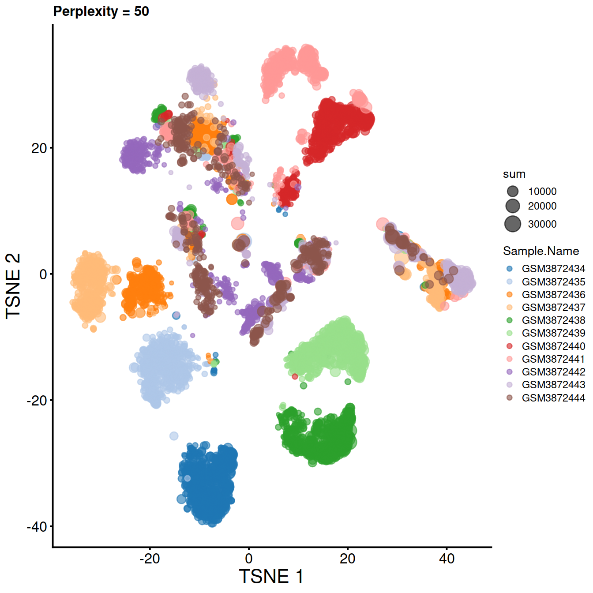
Compute t-SNE for several perplexity values:
tsne5.run <- runTSNE(sce, use_dimred="PCA", perplexity=5, rand_seed=123)
tsne5 <- plotTSNE(tsne5.run, colour_by="Sample.Name") + fontsize + ggtitle("Perplexity = 5")
#tsne200.run <- runTSNE(sce, use_dimred="PCA", perplexity=200, rand_seed=123)
#tsne200 <- plotTSNE(tsne200.run, colour_by="Sample.Name") + fontsize + ggtitle("Perplexity = 200")
tsne500.run <- runTSNE(sce, use_dimred="PCA", perplexity=500, rand_seed=123)
tsne500 <- plotTSNE(tsne500.run, colour_by="Sample.Name") + fontsize + ggtitle("Perplexity = 500")
#tsne1000.run <- runTSNE(sce, use_dimred="PCA", perplexity=1000, rand_seed=123)
#tsne1000 <- plotTSNE(tsne1000.run, colour_by="Sample.Name") + fontsize + ggtitle("Perplexity = 1000")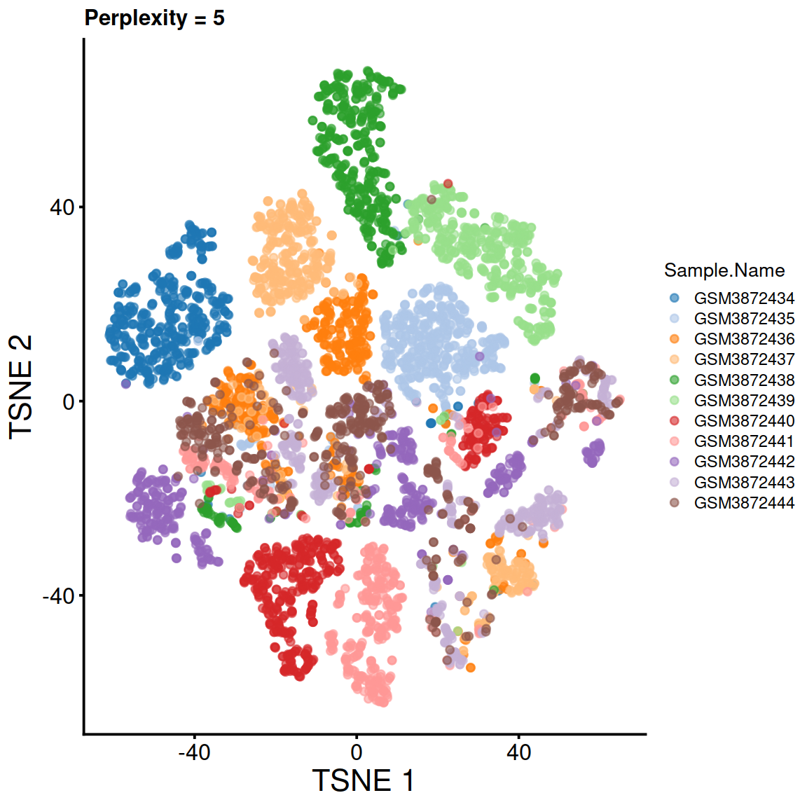
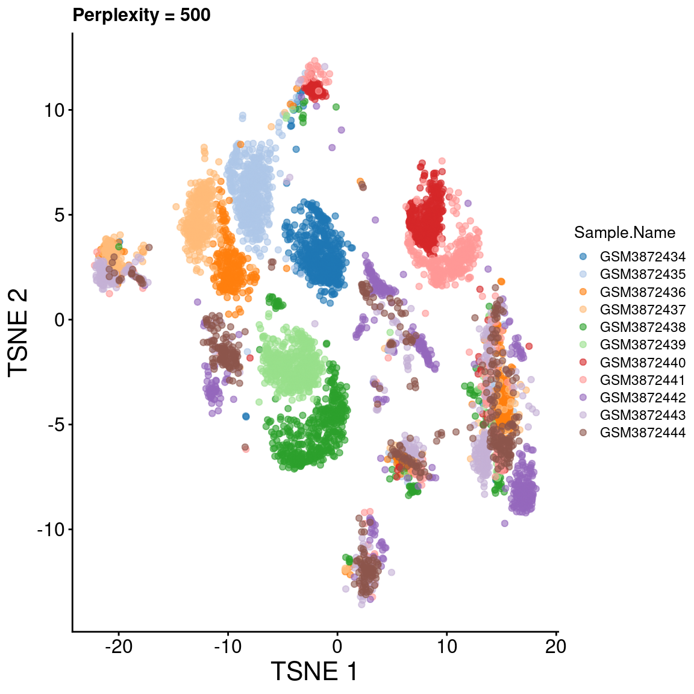
9.6 UMAP
Another neighbour graph method. Similar to t-SNE, but that is determistic, faster and claims to preserve both local and global structures.
Compute UMAP.
Plot UMAP:
sce.umap <- plotUMAP(sce,
colour_by="Sample.Name",
size_by="sum") +
fontsize +
ggtitle("UMAP")
sce.umap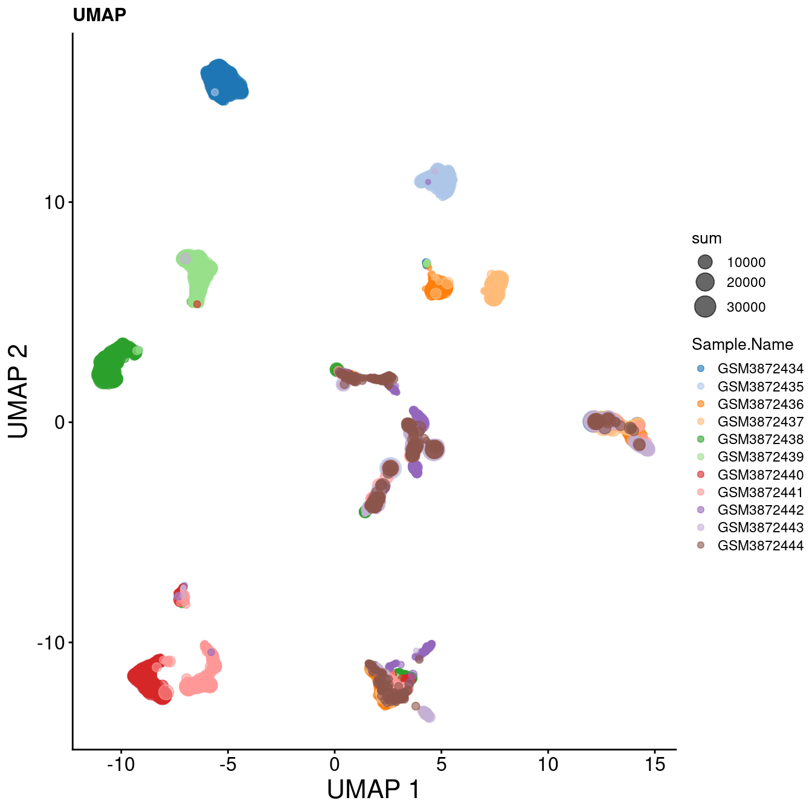
Save SCE object:
9.7 Session information
## R version 4.0.3 (2020-10-10)
## Platform: x86_64-pc-linux-gnu (64-bit)
## Running under: CentOS Linux 8
##
## Matrix products: default
## BLAS: /opt/R/R-4.0.3/lib64/R/lib/libRblas.so
## LAPACK: /opt/R/R-4.0.3/lib64/R/lib/libRlapack.so
##
## locale:
## [1] LC_CTYPE=en_GB.UTF-8 LC_NUMERIC=C
## [3] LC_TIME=en_GB.UTF-8 LC_COLLATE=en_GB.UTF-8
## [5] LC_MONETARY=en_GB.UTF-8 LC_MESSAGES=en_GB.UTF-8
## [7] LC_PAPER=en_GB.UTF-8 LC_NAME=C
## [9] LC_ADDRESS=C LC_TELEPHONE=C
## [11] LC_MEASUREMENT=en_GB.UTF-8 LC_IDENTIFICATION=C
##
## attached base packages:
## [1] parallel stats4 stats graphics grDevices utils datasets
## [8] methods base
##
## other attached packages:
## [1] ggfortify_0.4.11 BiocSingular_1.6.0
## [3] scuttle_1.0.4 robustbase_0.93-7
## [5] mixtools_1.2.0 dplyr_1.0.5
## [7] DT_0.18 irlba_2.3.3
## [9] biomaRt_2.46.3 Matrix_1.2-18
## [11] igraph_1.2.6 DropletUtils_1.10.3
## [13] scater_1.18.6 ggplot2_3.3.3
## [15] scran_1.18.7 SingleCellExperiment_1.12.0
## [17] SummarizedExperiment_1.20.0 Biobase_2.50.0
## [19] GenomicRanges_1.42.0 GenomeInfoDb_1.26.7
## [21] IRanges_2.24.1 S4Vectors_0.28.1
## [23] BiocGenerics_0.36.1 MatrixGenerics_1.2.1
## [25] matrixStats_0.58.0 knitr_1.32
##
## loaded via a namespace (and not attached):
## [1] BiocFileCache_1.14.0 splines_4.0.3
## [3] BiocParallel_1.24.1 digest_0.6.27
## [5] htmltools_0.5.1.1 viridis_0.5.1
## [7] fansi_0.4.2 magrittr_2.0.1
## [9] memoise_2.0.0 limma_3.46.0
## [11] readr_1.4.0 R.utils_2.10.1
## [13] askpass_1.1 prettyunits_1.1.1
## [15] colorspace_2.0-0 blob_1.2.1
## [17] rappdirs_0.3.1 xfun_0.22
## [19] crayon_1.4.1 RCurl_1.98-1.3
## [21] jsonlite_1.7.2 survival_3.2-7
## [23] glue_1.4.2 gtable_0.3.0
## [25] zlibbioc_1.36.0 XVector_0.30.0
## [27] DelayedArray_0.16.3 kernlab_0.9-29
## [29] Rhdf5lib_1.12.1 DEoptimR_1.0-8
## [31] HDF5Array_1.18.1 scales_1.1.1
## [33] DBI_1.1.1 edgeR_3.32.1
## [35] Rcpp_1.0.6 viridisLite_0.3.0
## [37] progress_1.2.2 dqrng_0.2.1
## [39] bit_4.0.4 rsvd_1.0.3
## [41] htmlwidgets_1.5.3 httr_1.4.2
## [43] ellipsis_0.3.1 pkgconfig_2.0.3
## [45] XML_3.99-0.5 R.methodsS3_1.8.1
## [47] farver_2.1.0 uwot_0.1.10
## [49] sass_0.3.1 dbplyr_2.0.0
## [51] locfit_1.5-9.4 utf8_1.2.1
## [53] tidyselect_1.1.0 labeling_0.4.2
## [55] rlang_0.4.10 AnnotationDbi_1.52.0
## [57] munsell_0.5.0 tools_4.0.3
## [59] cachem_1.0.4 generics_0.1.0
## [61] RSQLite_2.2.6 evaluate_0.14
## [63] stringr_1.4.0 fastmap_1.1.0
## [65] yaml_2.2.1 bit64_4.0.5
## [67] purrr_0.3.4 nlme_3.1-149
## [69] sparseMatrixStats_1.2.1 R.oo_1.24.0
## [71] xml2_1.3.2 compiler_4.0.3
## [73] rstudioapi_0.13 beeswarm_0.2.3
## [75] curl_4.3 tibble_3.1.1
## [77] statmod_1.4.35 bslib_0.2.4
## [79] stringi_1.5.3 highr_0.8
## [81] RSpectra_0.16-0 lattice_0.20-41
## [83] bluster_1.0.0 vctrs_0.3.7
## [85] pillar_1.6.0 lifecycle_1.0.0
## [87] rhdf5filters_1.2.0 jquerylib_0.1.3
## [89] RcppAnnoy_0.0.18 BiocNeighbors_1.8.2
## [91] cowplot_1.1.1 bitops_1.0-6
## [93] R6_2.5.0 bookdown_0.21
## [95] gridExtra_2.3 vipor_0.4.5
## [97] codetools_0.2-16 MASS_7.3-53
## [99] assertthat_0.2.1 rhdf5_2.34.0
## [101] openssl_1.4.3 withr_2.4.2
## [103] GenomeInfoDbData_1.2.4 mgcv_1.8-33
## [105] hms_1.0.0 grid_4.0.3
## [107] beachmat_2.6.4 tidyr_1.1.3
## [109] rmarkdown_2.7 DelayedMatrixStats_1.12.3
## [111] segmented_1.3-3 Rtsne_0.15
## [113] ggbeeswarm_0.6.0